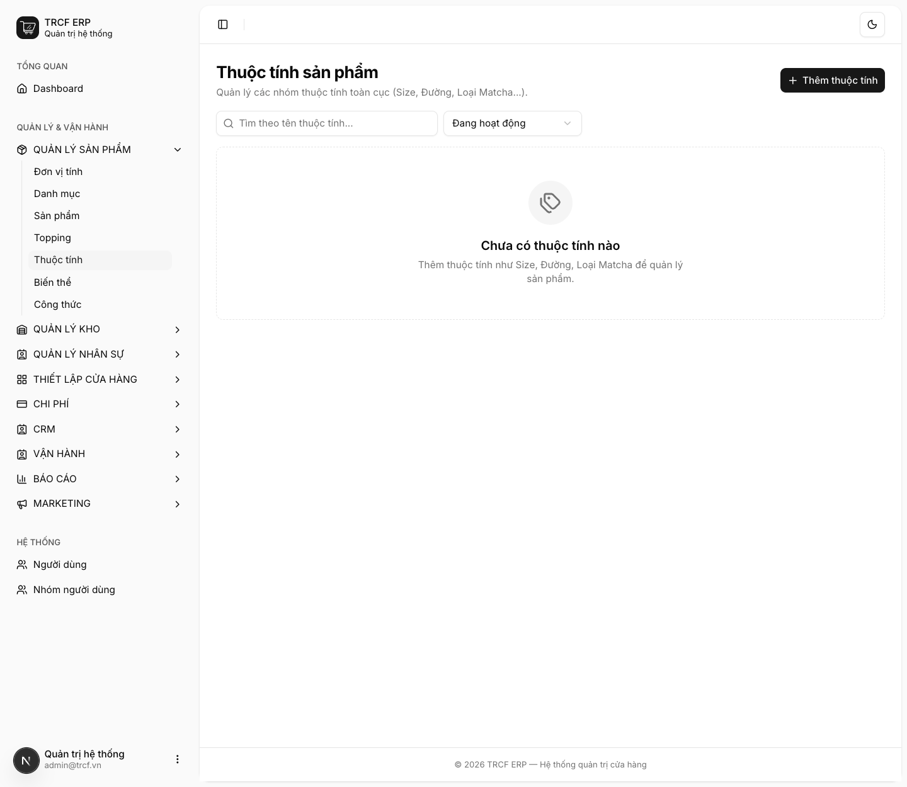
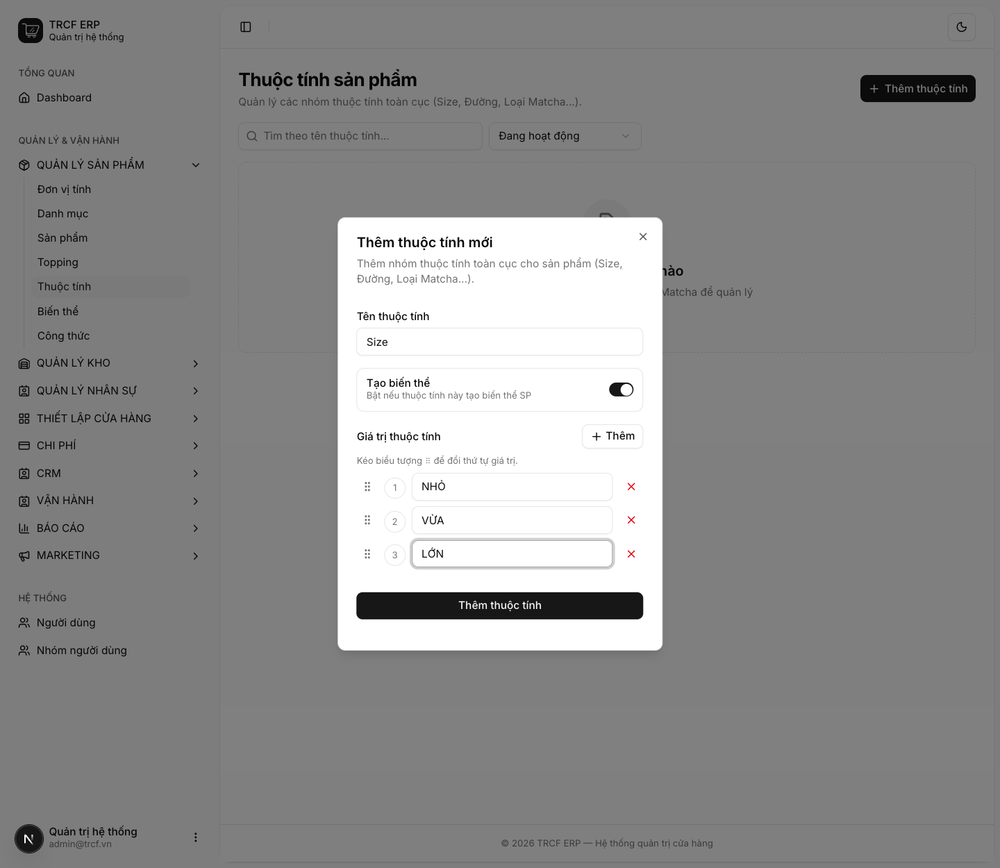
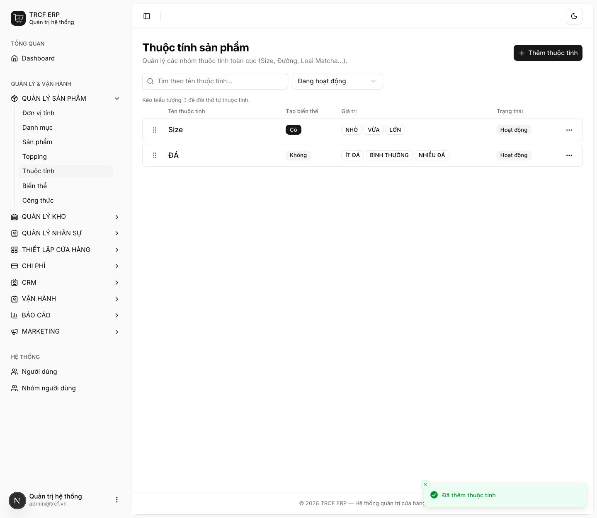

Chương 3 · Quản lý sản phẩm
3.4 Tạo thuộc tính sản phẩm (Size S/M/L)
1. Đường dẫn vào chức năng
Menu trái: Quản lý sản phẩm → Thuộc tính (địa chỉ /product-attributes).
- Quyết định quan trọng nhất: bật hay tắt công tắc Tạo biến thể.
2. Ví dụ nền và các bước thực hiện
Ví dụ: quán tạo 2 thuộc tính.
- "Size" (NHỎ, VỪA, LỚN): khác giá, khác định lượng → bật Tạo biến thể.
- "ĐÁ" (ÍT ĐÁ, BÌNH THƯỜNG, NHIỀU ĐÁ): chỉ là yêu cầu pha chế → tắt Tạo biến thể.
Bước 1Mở trang Thuộc tính
- Bấm Quản lý sản phẩm ở menu trái.
- Chọn Thuộc tính.
- Danh sách trống nếu chưa có thuộc tính nào.

Bước 2Thêm thuộc tính "Size" (có biến thể)
- Bấm Thêm thuộc tính.
- Tên thuộc tính: nhập "Size".
- Tạo biến thể: gạt sang bật.
- Giá trị thuộc tính: nhập "NHỎ", "VỪA", "LỚN" (mỗi giá trị một dòng).
- Bấm Thêm nếu cần thêm dòng giá trị.
- Kéo biểu tượng ⠿ để xếp thứ tự hiện trên POS.
- Bấm nút Thêm thuộc tính trong hộp thoại.

Bước 3Thêm thuộc tính "ĐÁ" (chỉ ghi chú)
- Bấm Thêm thuộc tính.
- Tên thuộc tính: nhập "ĐÁ".
- Tạo biến thể: để tắt.
- Giá trị thuộc tính: nhập "ÍT ĐÁ", "BÌNH THƯỜNG", "NHIỀU ĐÁ".
- Bấm nút Thêm thuộc tính trong hộp thoại.
- Kiểm tra cột Tạo biến thể: "Size" là "Có", "ĐÁ" là "Không".

3. Giải thích các trường
Chọn loại thuộc tính trước khi tạo
| Tạo biến thể = Có | Tạo biến thể = Không | |
|---|---|---|
| Dùng cho | Size, loại đế bánh: thứ khác giá, khác định lượng | Mức đá, mức đường: chỉ là yêu cầu pha chế |
| Sinh ra | Món riêng, giá riêng, công thức riêng | Không sinh món mới |
| Ảnh hưởng tiền | ✅ mỗi biến thể một giá | ❌ |
| Ảnh hưởng kho | ✅ công thức riêng, trừ nguyên liệu riêng | ❌ |
| Hiện trên POS | Trà đào (VỪA), Trà đào (LỚN) | Ghép vào tên: Trà đào (VỪA + ÍT ĐÁ) |
Các trường
| Trường | Điền gì | Bắt buộc |
|---|---|---|
| Tên thuộc tính | VD "Size", "ĐÁ", "ĐƯỜNG" | ✅ |
| Tạo biến thể | Bật/tắt theo bảng trên. Chọn kỹ, khó đổi về sau | ✅ |
| Giá trị thuộc tính | Mỗi giá trị một dòng. VD NHỎ, VỪA, LỚN. Kéo ⠿ để xếp thứ tự | ✅ |
4. Lưu ý quan trọng
⚠️
Không tắt được Tạo biến thể khi thuộc tính đã sinh biến thể đang bán.
⚠️
Đổi tên giá trị là an toàn (VD "VỪA" → "SIZE M").
- Biến thể giữ nguyên.
- Chỉ đổi chữ hiển thị.
💡
Sinh biến thể từ thuộc tính "Size" ở mục 3.5.